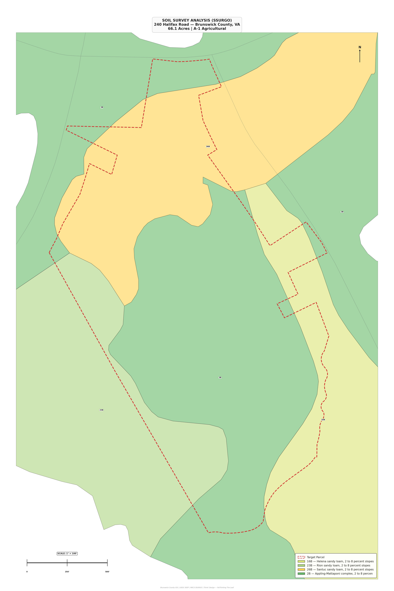

Reading the Land
Before a single trail is cleared or cabin staked, we study what the land already knows. These maps tell the story of 66 acres — its slopes, soils, water, and ecological memory — so every design decision honors what's already here.

Understanding Elevation & Relief
The property ranges from 250' to 321' elevation with 71 feet of relief. Two-foot contour intervals reveal the ridge-and-valley character of the site — steep draws where water concentrates follow naturally toward the southeast. These landforms guided every zone placement: cabins perched on high ground, wetland classrooms tucked into the natural drainage.

Where Water Flows, Life Follows
DEM-derived slope mapping overlaid with NHD streamlines and flow direction arrows reveal the property's hydrological fingerprint. Steep slopes (shown in red/pink) define the limits of development; gentle grades (green) identify buildable zones. The blue stream corridor threading south through the parcel is the spine of the entire wetland education zone.

The Foundation Beneath
The USDA SSURGO survey reveals a mosaic of sandy loam soils across the parcel: Helena (16B), Rion (23B), Santuc (26B), and Appling-Mattaponi (2B) — all on 2—8% slopes. This is A-1 Agricultural land. The soil types directly informed where lavender can thrive (well-drained Helena loam) versus where wetlands naturally persist (Santuc loam in low areas).

The Complete Picture
Every layer combined — satellite imagery, topography, soils, hydrology, and flow direction — into a single composite view. This is how a landscape architect reads the land. The overlay reveals where mature pine stands anchor the soil, where cleared tobacco fields are ready for lavender, and where the natural stream corridor creates the perfect setting for boardwalks and outdoor classrooms. Design with the land, not against it.
Maps by Think! Design & Planning · USGS LIDAR + NRCS SSURGO + NHD Hydrography · Brunswick County GIS